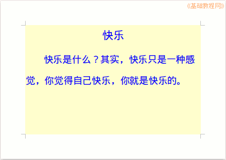

2015-2016 第一学期七年级文字处理和网页教学设计
作者：TeliuTe 来源：基础教程网
二十二、学会页面和段落 返回目录 下一课
（一）教学设计
1、学习目标：
2、注意事项：绕过弯来，既不要跳也不要落，一楼过了二楼
3、教学过程：
1）教师准备学案和板书；
2）学生整队进入，开机抄黑板上笔记；
3）教师讲解板书演示操作；
4）学生打指法、日志、完成操作；
5）教师打勾记录学生指法成绩，检查日志和操作；
注：学生抄完笔记就开始打指法、日志，老师讲完后再继续完成；
（二）板书设计(学生笔记)
第22课 学会页面和段落
1.点菜单，格式，页面，32开，横向，背景
2.文泉驿微米黑，二号，颜色
3.标题居中，点正文
4.菜单，格式，段落，第一行，4，1.5倍
--
2015-11-27 11:01
--
操作图示：

（三）课后记
不同的学生要分别检查，休学的要注意是不是抄袭做过的
学生做的很快，慢的还是打字费时间，如果指法解决了
--
可能会提高一大步，大多数时间都是费在录入上
稳压电源用了十多年了，听着有噪音，不知还能坚持多久
--
大课间学生来的太早，后面可能会有较多的时间玩
后面出现问题也是麻烦，课间到别地方去转转也好
--
内容不用太死，有些地方看着不合适自己调就可以了
比如行间距，标题字号这些，看情况来定
--
改的时候一定要看着光标，改哪儿就把光标放哪里
光标就是一闪一闪的光标插入点
--
缩进有的同学错了，还在用空格，或者用标尺
发现错了的，重新另存，再把错误的删除了，双击多练练
--
有好几个7-2的文件夹都没创建好的，或者是创建了7-2的文件
上一节课还设要把文件夹过一下，要不后面就会出麻烦
返回目录 下一课
本教程由86团学校TeliuTe制作|著作权所有
基础教程网：http://teliute.org/
美丽的校园……
转载和引用本站内容，请保留作者和本站链接。